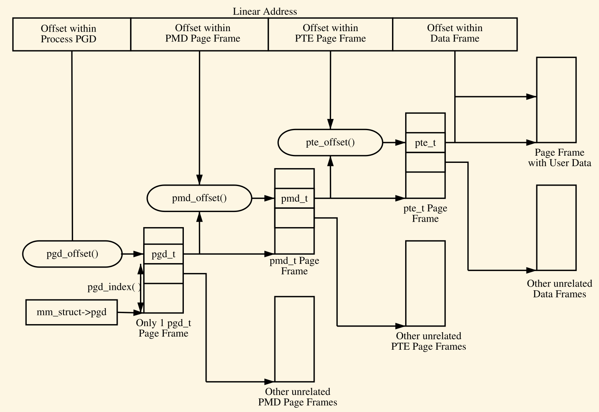
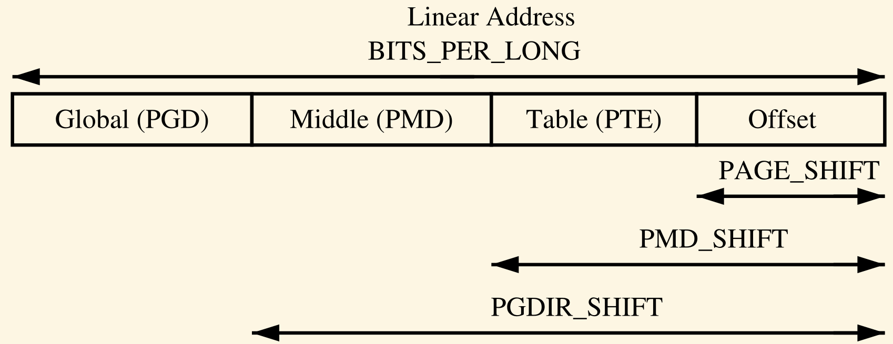
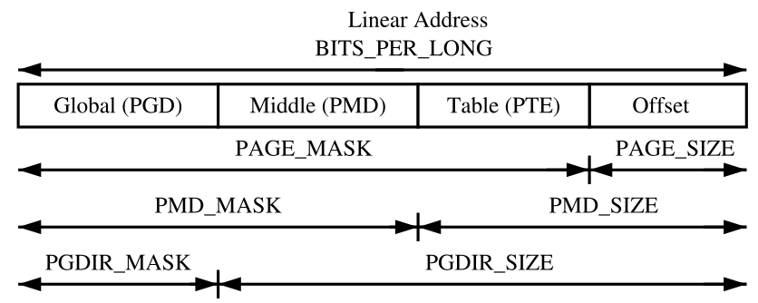

内存管理之页表管理
Table of Contents
本文讲述Linux的页表管理, 在它的上一篇讲述了mm模块如何描述物理内存.
本文会讲述Linux内核的页表是如何组织的, 以及各级页表都使用什么类型的数据结构来描述. 接着会讲述一个虚拟地址是怎样划分为几部分从而用来一级一级的往下寻找页表, 最后会到PTE(Page Table Entry). 还会介绍一些宏用来查找页表. 对启动阶段的页表初始化也会作出阐述, 最后就是TLB和CPU的Cache也会被讲述到.
1 页目录表示
每一个进程都有一个指向它自己PGD的指针(mm_struct->pgd), 这实际是一个页框, 这个页框包含一个pgd_t类型的数组. 这个成员是架构相关的定义, 在asm/page.h中, 比如ia64中是这样定义的:
typedef struct { unsigned long pgd; } pgd_t;
根据架构的不同，页表如何被加载也是不同的。以x86为例，进程页表的加载是通过将mm_struct->pgd复制到cr3寄存器中，同时会刷新tlb。
每一个pgd页表里的条目指向包含有许多pmd条目的页框基地址，pgd页表本身的基地址如前所述在x86下是将mm_struct->pgd拷贝到cr3寄存器中，而每一个pmd条目又指向包含有许多pte条目的页框基地址， pte条目最终指向包含有用户所请求数据的页框基地址。如果是遇到page被swap out的情况，就会调用do_swap_page函数。页表组织如下图：

Figure 1: 各级页表的组织
一个给定的线性地址会划分为几个部分来表明在各级页表中的偏移。为了辅助将线性地址划分为几部分，对于每级页表，都有几个宏来完成一些功能，也就是SHIFT，SIZE以及MASK宏。SHIFT类的宏指明了每级页表能映射的长度（按bit算）。如下图：

Figure 2: 各类SHIFT宏
我们可以看看内核中关于SHIFT类宏的定义（ia64）：
#if defined(CONFIG_IA64_PAGE_SIZE_4KB) # define PAGE_SHIFT 12 #elif defined(CONFIG_IA64_PAGE_SIZE_8KB) # define PAGE_SHIFT 13 #elif defined(CONFIG_IA64_PAGE_SIZE_16KB) # define PAGE_SHIFT 14 #elif defined(CONFIG_IA64_PAGE_SIZE_64KB) # define PAGE_SHIFT 16
PAGE_SHIFT表示了一个页面的大小，可以看到ia64架构下，可以配置不同的页面大小。再来看看PMD_SHIFT（同样是ia64）：
#define PTRS_PER_PTD_SHIFT (PAGE_SHIFT-3) #define PMD_SHIFT (PAGE_SHIFT + (PTRS_PER_PTD_SHIFT))
其中PTRS_PER_PTD_SHIFT表示了一个页表能包含的下级页表基地址（指针）数量。对于ia64如果配置了四级页表，还有PUD_SHIFT，看看定义：
#define PUD_SHIFT (PMD_SHIFT + (PTRS_PER_PTD_SHIFT))
最后是PGDIR_SHIFT的定义了，它也依是否开启4级页表其定义而有所不同：
#if CONFIG_PGTABLE_LEVELS == 4 #define PGDIR_SHIFT (PUD_SHIFT + (PTRS_PER_PTD_SHIFT)) #else #define PGDIR_SHIFT (PMD_SHIFT + (PTRS_PER_PTD_SHIFT)) #endif
而MASK值可以和线性地址进行AND操作从而取出其高位部分的比特，经常被用来确定一个线性地址是否在给定级别的页表上对齐。而SIZE宏主要用来表明各级别页表里的条目能寻址多少字节。SIZE与MASK宏的关系如下图：

Figure 3: SIZE与MASK宏
下面以X86为例来说下这三个类型的宏是如何计算的，其中SHIFT宏较为重要，因为其它的宏都是基于这个宏计算的。在X86上的三级页表下：
/* PAGE_SHIFT determines the page size */ #define PAGE_SHIFT 12 #define PAGE_SIZE (_AC(1,UL) << PAGE_SHIFT) #define PAGE_MASK (~(PAGE_SIZE-1))
PAGE_SHIFT其实就是线性地址中offset部分的比特数目，X86下是12比特。一个页面的大小可以通过2^PAGE_SHIFT来算出。PAGE_MASK就是PAGE_SIZE-1再取反。如果一个页面需要在页边界对齐，PAGE_ALIGN宏可以使用。其它级别的MASK和SIZE可以类似方式计算出。
2 页表条目表示
如前所述, 对于PTEs, PMDs以及PGDs来说, 分别由结构体pte_t, pmd_t以及pgd_t结构体来表示. 即使这些结构体里的成员只有一个unsigned的成员, 但是依旧被定义成结构体, 这主要有两个目的, 一是起 到类型保护的作用, 避免被不恰当的使用. 第二个目的就是, 像在x86中使用的PAE的特点, 有特别的四个比特用来寻址超过4GB的物理内存. 为了存储保护比特, 定义了prprot_t类型, 它会存储相关的标志并且通常是存在一个页表条目的低比特位.
对于类型转换来说, 在asm/page.h里提供了四个宏, 参数是前面提到的四种类型, 然后返回结构体相关类型的值. 这些宏是pte_val, pmd_val, pgd_val以及pgprot_val(). 对于取逆类型转换, 提供了四个宏: __pte(), __pmd(), __pgd()以及__pgprot().
究竟在那些位置上存储保护比特依各个架构不同. 为了解释方便, 采用的例子是没有开启PAE的x86架构, 但是相同的原则几乎可以应用在所有架构上. 在X86上(没有开启PAE), pte_t是存放在结构体里的32-bit整数. 每一个pte_t条目都指向页框里的一个地址, 并且所有被指向的地址都保证对齐在页边界. 因此在每一个页表条目中, 都有PAGE_SHIFT(12)个比特可以自由的用来标记状态. 一些保护和状态比特在下表列出, 不过究竟有哪些比特存在以及它们的具体意义如何却可能因架构的变化而不同:
| 比特 | 功能 |
|---|---|
| _PAGE_PRESENT | 页面在内存中并且没有被换出 |
| _PAGE_PROTNONE | 页面在内存中, 但是不可访问 |
| _PAGE_RW | 如果页面可写就设置 |
| _PAGE_USER | 如果页面可以从用户空间访问就设置 |
| _PAGE_DIRTY | 页面被写过 |
| _PAGE_ACCESSED | 页面被访问过 |
3 使用页表条目
定义在pgtable.h中的一些宏, 可以用来检查和查看页表条目. 有三个重要的宏, 用来把线性地址分解为它们的组成部分. pgd_offset使用传入的两个参数, 一个地址以及一个mm_struct结构体, 返回一个pgd条目:
#ifndef pgd_offset #define pgd_offset(mm, address) pgd_offset_pgd((mm)->pgd, (address)) #endif static inline pgd_t *pgd_offset_pgd(pgd_t *pgd, unsigned long address) { return (pgd + pgd_index(address)); }; #ifndef pgd_index /* Must be a compile-time constant, so implement it as a macro */ #define pgd_index(a) (((a) >> PGDIR_SHIFT) & (PTRS_PER_PGD - 1)) #endif
而pmd_offset使用传入的两个参数, 一个地址和一个PGD条目, 返回相关的PMD条目. 下面的宏用来确定相应的页表条目项是否存在或者是否在使用:
如果对应的条目不存在, pte_none(), pmd_none()等返回1:
#define pte_none(pte) (!pte_val(pte)) # define pte_val(x) ((x).pte) #define pmd_none(pmd) (!pmd_val(pmd)) # define pmd_val(x) ((x).pmd)
如果对应的页表条目有PRESENT比特被设置, pte_present(), pmd_present()等返回1:
#define pte_present(pte) (pte_val(pte) & (_PAGE_P | _PAGE_PROTNONE)) #define pmd_present(pmd) (pmd_val(pmd) != 0UL)
pte_clear(), pmd_clear()等将会清除对应的条目:
#define pte_clear(mm,addr,pte) (pte_val(*(pte)) = 0UL) #define pmd_clear(pmdp) (pmd_val(*(pmdp)) = 0UL)
4 翻译与设置页表条目
有一组宏和函数用来映射地址和页面里的PTE条目, 以及设置单个条目.
宏mk_pte使用两个参数, 一个是struct page, 另一个是protection bit, 将它们组合起来从而形成pte_t可以插入到页表中. 另一个相似的宏是mk_pte_phys, 只不过它的参数是物理页面地址.
pte_page宏返回struct page, 这个页面对应pte条目. pmd_page返回一个struct page包含pte条目.
而set_pte宏可以使用mk_pte宏返回的参数去设置pte条目到进程的页表, pte_clear的作用就相反了.
5 分配以及释放页表
最后再介绍几个页表的分配与释放函数。如前所述，页表也是物理页面，只不过是包含有许多条目，分配与释放物理页面是一个相对昂贵的操作，昂贵的意思是，时间消耗大，另外在页面分配期间中断不能打开。不论在哪个级别，页表的分配与删除都是十分频繁的操作，所以这些操作保持尽量的快是十分重要的。
因此用于页表的页是缓存起来了的，不过对于各个缓存的实现却是架构相异的。比如对于PGD的缓存不是每个架构都实现了，因为PGD的变化仅存在于进程创建或销毁时。对于PGD，PMD以及PTE来说，各有两套释放和分配函数，即pgd_alloc，pmd_alloc以及pte_alloc三个分配的函数。另外是pfd_free，pmd_free以及pte_free三个释放的函数。
6 内核页表
在系统刚起来的时候，分页功能是没有准备好的，因为页表无法初始化它自己。初始化页表的实现是架构相关的。这里我们只关心X86，这时页表的初始化分为两个阶段，bootstrap（自举）阶段只设置8MB的空间进而可以进一步的初始化分页单元，第二阶段就是初始化余下的部分了。
6.1 自举
汇编函数startup_32负责使能分页功能，它实现在head_32.S文件里（对于x86的情况）。在vmlinuz里正常的内核代码编译在PAGE_OFFSET + 1MiB的基址处，内核实际上会被加载至第一MB字节处。头一MB的空间预留给某些设备用来和BIOS交互。
6.2 初始化完成
余下的工作就是交给paging_init去完成了。
7 映射地址到struct page
虚拟地址到物理地址的映射要求快速的完成，对于struct page到物理地址也需要快速完成转换。Linux可以做到比较快速的完成转换，这是因为全局mem_map数组拥有所有指向struct page的指针。下面针对x86来介绍下。
7.1 将物理地址映射到虚拟内核地址
Linux将物理地址0映射到虚拟地址的PAGE_OFFSET处，换言之，虚拟地址要想转换为物理地址，只需要将虚拟地址减去PAGE_OFFSET即可，这便是virt_to_phys的核心：
static inline unsigned long virt_to_phys (volatile void *address) { return (unsigned long) address - PAGE_OFFSET; }
当然逆向操作，物理地址到虚拟地址，就是加上PAGE_OFFSET了，这由函数phys_to_virt完成。
7.2 将struct pages映射到物理地址
先找到PFN，然后再PAGE_SHIFT即可：
#define page_to_phys(page) ((dma_addr_t)page_to_pfn(page) << PAGE_SHIFT) #define page_to_pfn __page_to_pfn #define __page_to_pfn(page) ((unsigned long)((page) - mem_map) + \ ARCH_PFN_OFFSET)
8 TLB
起初，当处理器需要将虚拟地址映射到物理地址时，它必须完整的遍历页目录去搜寻一个恰当的PTE条目。这就是说，每条引用内存的汇编指令都会请求几次额外的页表遍历。为了避免这样的开销，架构上利用了许多程序都有局部性的原理。这就是TLB存在的依据了，这是一个缓存，存放的是虚拟地址到物理地址的转换。
Linux假设所有的架构都支持某种类型的TLB，当然架构无关的代码是不关心具体是怎么做的。架构相关的TLB操作分散在VM代码里，这些地方是架构知道的需要进行TLB操作的地方。举个例子，在Page Fault发生后，页表就更新了，这时，处理器就知道可能要为这个发生Page Fault的虚拟地址去更新TLB了。
不是所有的架构都支持所有类型的TLB操作，但是，因为某些架构确实需要这么做，所以钩子函数必须存在。对于不需要某些TLB操作的架构情况，这种TLB操作在编译时就被优化成NULL操作了。TLB操作有许多种类，下面介绍了一些例子。但是仅提供一个TLBflush函数操作也是可以的，不过由于tlb flush和tlb重填都是比较昂贵的操作，所以它们的操作应该尽量避免。
void flush_tlb_all(void)
它会flush系统里运行CPU的所有TLB，这是最昂贵的TLB操作。这个函数完成后，对page table的修改就全局可见了。比如内核的页表是全局的，被修改了的话需要调用这个函数。
void flush_tlb_mm(struct mm_struct *mm)
它会刷新mm上下文的usespace部分。在某些架构，比如MIPS这样的，它会在所有处理器上执行刷新，但是通常它是在本地处理器上执行．当某个操作会影响地址空间时，这个函数就会被调用．这些操作包括比如使用函数dup_mmap复制整个地址空间，以及使用exit _mmap删除地址映射．
void flush_tlb_range(struct mm_struct *mm, unsigned long start, unsigned long end)
如名字所示，这个函数刷新所在用户进程mm里start到end之间的条目．在函数mremap运行期间，一个 新的内存区域被移动或改变时就需要调用这个函数．
9 第一级CPU缓存管理
Linux管理CPU缓存和管理TLB的方式类似，本节介绍Linux怎样使用和管理CPU缓存．和TLB缓存类似，CPU缓存也利用了程序局部性原理．为了避免每次都要从内存中取数据，CPU都会缓存一部分数据在cache里．常见的有两级缓存，叫做L1和L2缓存．其中L2缓存更大，但是比L1缓存更慢．
CPU缓存组织成lines．每行的大小都比较小，通常是32 bytes，并且每行都对齐在32字节边界处．在Linux里，一个缓存行的大小由架构定义的变量L1_CACHE_BYTES指明．
地址是如何映射到缓存行在各个架构是不同的．但主要是三种形式，直接映射，全关联映射以及组映射．直接映射是最简单的方式，每个内存块都映射到一个可能的cache行．而全相关，是说任何内存块可以映射到任何缓存行．而组相关是上述两种方式的混合，这时任何内存地址都可以映射到任何缓存行，但是这个缓存行是一组限定的来自所有可提供的缓存行．不论何种映射方式，它们都有一个共同的特点：靠近并与缓存大小对齐的地址很可能使用不同的行．